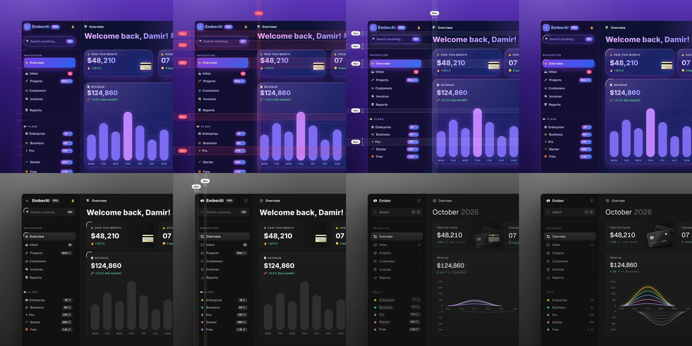

Unslop
A Claude Code skill that finds and fixes the generic, AI-generated look in your interface, pass by pass.
Audits your AI-built interface for design slop - purple gradients, emoji labels, stock layouts - sets a direction, and fixes it screen by screen like a designer doing a review.

How does it work?
Your AI-built interface looks like every other AI-built interface - generic gradients, stock layouts, and copy that screams 'a machine made this.'
You type /unslop this dashboard in Claude Code (or $unslop in Codex).
Your project's interface code (React, Vue, Svelte, Tailwind, plain HTML/CSS, or a live site URL).
The skill audits the screen, sets a design direction, and makes fixes in order.
- Audits the screen and lists each sign of 'slop' with its location
- Sets a design direction - character, color moments, a signature detail - and shows it to you before changing anything
- Makes passes in order: spacing, color, icons, copy, typography, layout, details, visuals, motion
- Optionally generates a short video of the screen unslopping itself (needs Playwright and ffmpeg installed)
A designed interface instead of a generic one.
- A redesigned interfaceRemoves purple gradients, replaces emoji labels with proper icons, fixes uneven spacing
- A design-direction documentBefore any edits, you see the proposed character, color palette, and signature detail - you can steer it
What changes for me?
Without it
- Every AI-built interface has the same purple gradient, centered hero, three-card layout, and emoji labels
- You'd need to hire a designer or learn design yourself to fix the generic look
With it
- One command audits the slop, proposes a direction, and fixes it pass by pass
- Works with your existing code - React, Vue, Svelte, Tailwind, or plain HTML
How hard is it to try?
Effort
- Clone the repo:
git clone https://github.com/heydamir/unslop - Copy the skill to your Claude Code skills folder:
mkdir -p ~/.claude/skills && cp -r unslop/skills/unslop ~/.claude/skills/ - In any project, type
/unslop this dashboardand review the audit before it makes changes
What it takes on your computer
- Space on disk
- The skill itself is just text files (a few KB). Optional: Playwright (a browser testing tool) and Chromium for snapshots and videos. ffmpeg (a video tool) for the story video.
- Memory while it runs
- Runs inside Claude Code - no separate process.
- Runs on
- Anywhere Claude Code or Codex runs (macOS, Windows, Linux).
Paste this into Claude Code. It runs your safety scan first, then a 10-minute test.
/skillspector https://github.com/heydamir/unslop Then: Clone the repo, copy the skill to `~/.claude/skills/unslop`, open a project with a UI, and type `/unslop this dashboard`. 10 minutes.
Should I?
Great if you...
- Anyone who builds interfaces with AI and wants them to look hand-designed
- Non-designers who want a design review without hiring one
- People who already use Claude Code and want a one-command design fix
Skip it if...
- You already have a designer or a design system you follow
- You don't use Claude Code or Codex - this skill only works inside those tools
- You need full design control - Unslop applies its own design opinions
Instead, you could look at
- Hallmark50 real design themes for building new pages from scratch, rather than fixing existing ones
- ImpeccableA broader design vocabulary with 24 commands (polish, bolder, critique, audit) from the creator of jQuery UI
- taste-skillA skill focused on giving your AI 'good taste' in design, with a different philosophy
Is it safe?
- Security advisories: 0GitHub's advisory list, checked Nov 6
- Searches for CVEs, vulnerabilities, malware and scams6 results read, including the national CVE database: nothing found
- Are the stars earned?10.4K stars, 4 contributors, 12 commits. Flag: 10361 stars on only 12 commit(s)
Activity flag only: 10K stars on 12 commits, 4 contributors, 9 days old. A small Claude skill that went viral. No advisories, no CVEs, no malware or scam reports. The stars/commits ratio is a watch-out on the page.
Watch out for
- 10K stars on 12 commits. Viral popularity on a very small codebase. The skill is just text files - there isn't much code to review.
- 9 days old. Real use beyond the creator's own examples has not been reported.
- Only works with Claude Code or Codex. It's a skill (an instruction set), not a standalone tool.
- Generated visuals cost money. If you ask it to generate scenes or objects (not just fix your code), it uses a paid service (fal, Replicate, or OpenAI) and asks before each generation.
- CC BY 4.0 license. Requires attribution - not the MIT or Apache license most open-source tools use.
Who's using it, and for what?
Unslop is 9 days old. No independent user reports have been published yet. Creator Damir Sokolovsky started the 'Unslopping series' on X.
We couldn't find anyone describing real use of it yet. That's normal for a brand-new repo, and it's worth knowing.
Who's talking about it
- jc-aiwikiUnslop UI wiki entry
- Bleap FinanceBest Claude Code Skills for Vibe Coding
- TrendshiftMonthly trending
- findarepoListed in digest
Sources
- Unslop GitHub, Nov 6
- Unslop website, Nov 6